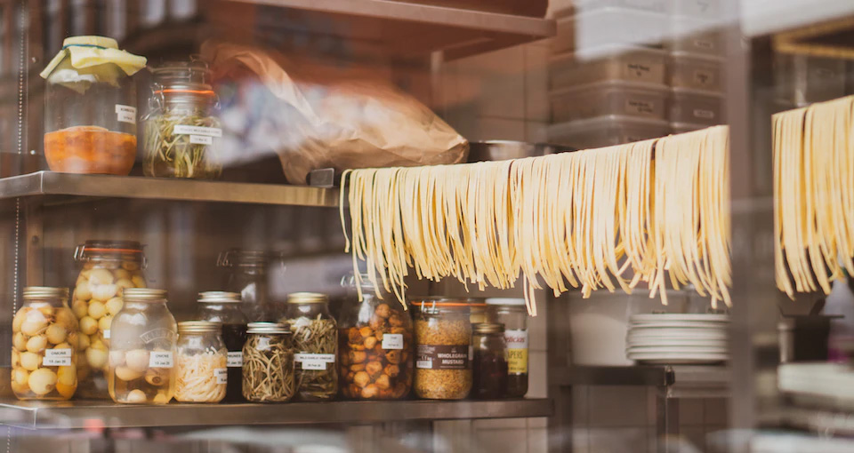

Vis din yndlingsret med fettuccine
og vind en tur til Italien

Hos Urtekram elsker vi at blive inspireret til nye retter, for der
findes nemlig uendelig mange, man kan lave med især pasta.
Lige nu har du muligheden for at slippe fantasien løs i køkkenet
ved at vise, hvilken ret du bedst kan lide at lave med Urtekrams fettucine.
Så deltager du i kokurrencen om et rejsegavekort på 20.000 kr. til pastaens
moderland, Italien samt et pastakursus med den verdenskendte italienske
kok, Giorgio Locatelli.
Vær med i konkurrencen ved at poste dit billede på Instagram med hashtagget
#minfettuccineret